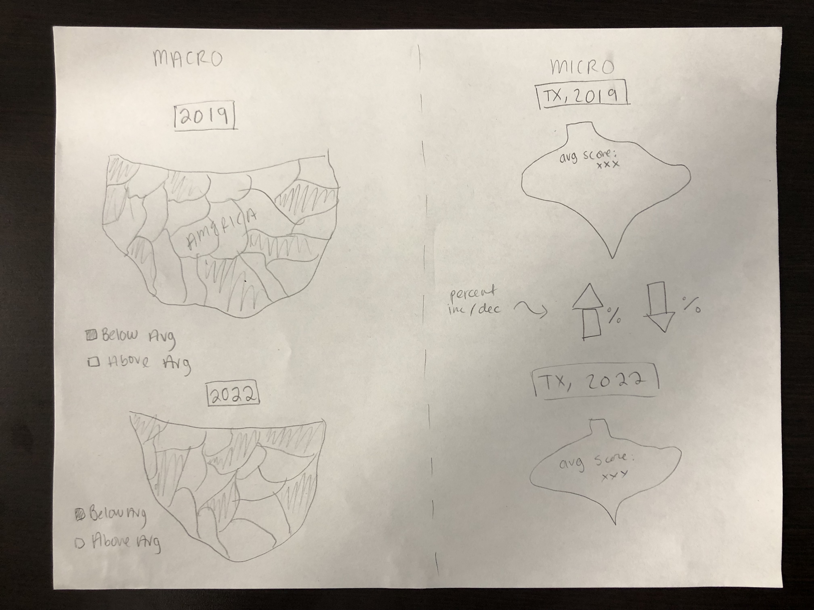
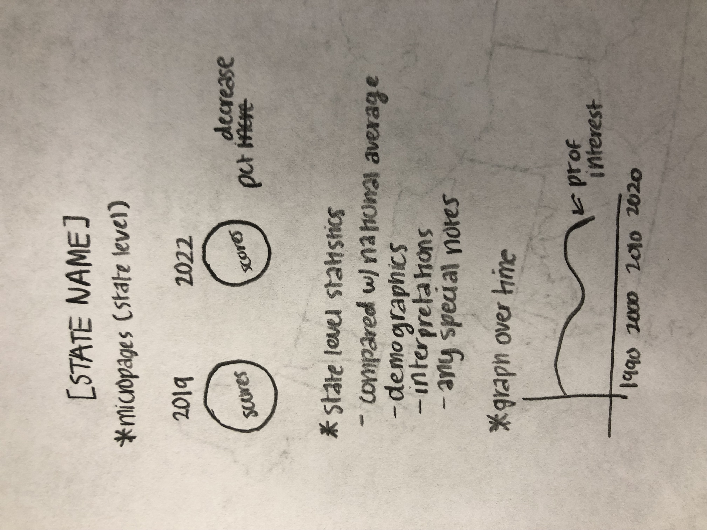
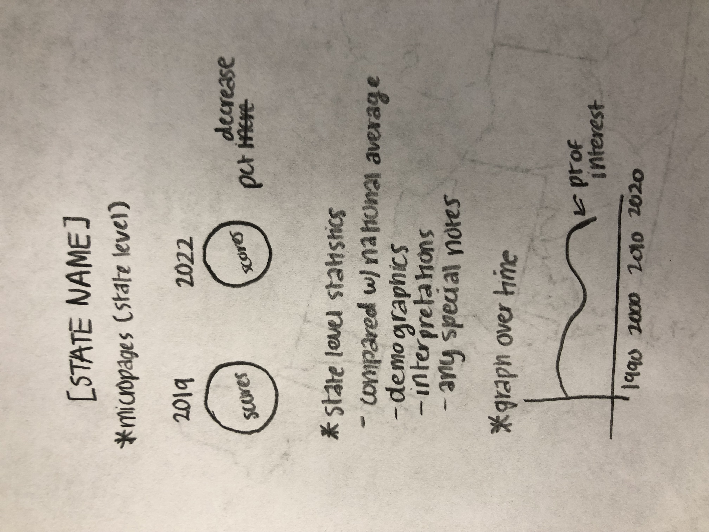
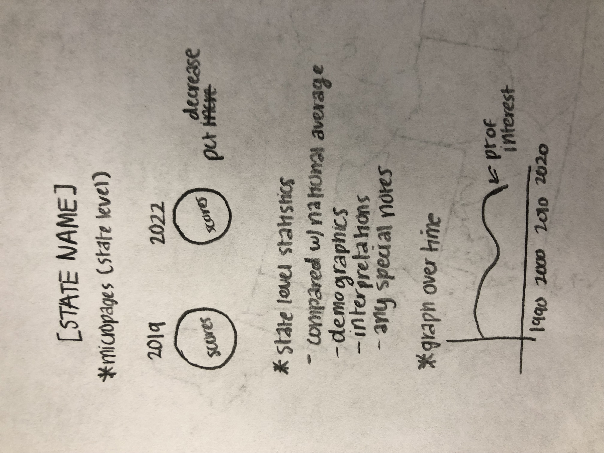

Our project aims to display pandemic learning loss visually on both a national and a state level. Our data compares
the average math scores of 8th graders in 2019 versus 2022, and we have found that the average scores have declined in almost
every single state. If time permits, we also hope to gain some insight into how the pandemic has affected learning for different demographics.
TERMS FROM DATASET
Jurisdiction: state 2019: average score for state in 2019 2022: average score for state in 2022
PROTOTYPES
Diya's prototype: 
Isabella's prototype: 
When comparing our two prototypes, we noticed several similarities but also some differences. On the macropage, while we both had the idea to shade the states on the U.S. map
based on a particular data point, Diya's idea was to shade based on whether the state's average score was above or below the national average, while Isabella's idea
was to shade based on the percent decrease from 2019 to 2022. We decided to go with the percent decrease comparing the two years since our project aims to show pandemic learning loss from 2019 to 2022.
As for the micropages, we both wanted to focus in on specific states and compare the state averages in 2019 and 2022. We also decided to include Diya's idea to put an outline of the state
on each page and Isabella's idea to put state-specific data on each page (and if time permits, demographics per state) on the micropages. We believe this approach best combines achievability,
discoverability, understandability, usability, and cultural context as per the UX Design Perspectives we looked at.
PIPELINE
As this is a collaborative project, both of us, Isabella and Diya, plan to be working together on every piece. However, our preliminary thoughts on
how the work will be divided up are that Diya will be working primarily on the macropage while Isabella will be working primarily on the micropages.
Of course, we plan to work together on every decision and aspect of the project despite our different roles.
 
